GJKアルゴリズム
ここではBulletでも使われているGJK(Gilbert-Johnson-Keerthi)アルゴリズムの簡単な原理を述べる． GJKの説明の前に数学的準備のために凸多面体(ポリトープ)とミンコフスキー和，差について説明する． これらがよく分かっている人は飛ばしてもよい．
凸多面体
物理シミュレーションでは多くの形状を扱うが，ほとんどの形状は多面体の集合で近似できる
(小学校の算数の授業で円を三角形の集合で表して面積を求めたのを思い出してほしい)．
多面体の中でも凹んだ部分がないものを凸多面体(ポリトープ)という．
2次元の多面体(多角形)を思い浮かべ，その周囲に輪ゴムをかけたときに，
すべての辺が輪ゴムに接していたら凸多面体，
もしも輪ゴムが辺から浮いているところがあったら(下図右の破線部分)，凹多面体となる．
また，多面体を囲うような凸多面体を凸包(convex hull)という．
GJKアルゴリズムではこの凸多面体を扱う．

凸多面体と凹多面体
各次元において必ず凸多面体になる図形が存在する． 例えば，2次元での三角形，3次元での四面体である． これらの図形は絶対に凹多面体にならない． d次元におけるこららの図形をd単体(d-simplex)という． 1単体は線分，2単体は三角形，3単体は四面体である (頂点数がそれぞれd+1になっていることにも注目)．
サポート
次はサポート写像について説明する．
今ある凸多面体Aとベクトル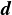があったとき，
そのベクトル方向で最も遠い点を支点という(下図のP点)．
そして，方向から視点を求める関数をサポート写像(or サポート関数)と呼ぶ．
以下では形状Aとベクトルのサポート写像を と書くことにする．
また，支点を含み，を法線とする平面をサポート平面と呼ぶ．
と書くことにする．
また，支点を含み，を法線とする平面をサポート平面と呼ぶ．

支点
ミンコフスキー和とミンコフスキー差
点の集合で表された2つの形状A,Bがあるとき，
ときそれらに対してミンコフスキー和が以下のように定義できる．
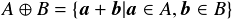
 と
と は集合A,B内の点の位置ベクトル(座標)で，
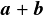はベクトルの和になっている．
式だけだと直感的にどうなっているのかわかりにくいので図で見てみよう．
下図に四角形Aと三角形Bの場合を示す．
右側の黒の太い実線がミンコフスキー和で得られる形状を表している．
ちょうど，四角形Aの周囲を三角形Bを原点位置を合わせながら回したときにできる図形になっている．
は集合A,B内の点の位置ベクトル(座標)で，
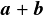はベクトルの和になっている．
式だけだと直感的にどうなっているのかわかりにくいので図で見てみよう．
下図に四角形Aと三角形Bの場合を示す．
右側の黒の太い実線がミンコフスキー和で得られる形状を表している．
ちょうど，四角形Aの周囲を三角形Bを原点位置を合わせながら回したときにできる図形になっている．

ミンコフスキー和
次にミンコフスキー差は以下のような式で表される．

ベクトル和のところが差( )になっているだけである．
よって，これはAと-Bのミンコフスキー和
)になっているだけである．
よって，これはAと-Bのミンコフスキー和 で置き換えることができる．
ここで，-Bは図形Bを原点中心に反転させた形状とする．
先ほどと同様に図で表すと以下のようになる．
で置き換えることができる．
ここで，-Bは図形Bを原点中心に反転させた形状とする．
先ほどと同様に図で表すと以下のようになる．
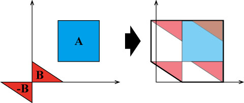
ミンコフスキー差
ミンコフスキー和/差は画像処理の分野でも2値画像の穴をふさいだり，ノイズを除去するのに使われているが， あちらではそれぞれ元図形の和集合，積集合をとっていることに注意． 今定義したミンコフスキー和/差は単純にベクトル和を取っているだけである．
GJKアルゴリズムの原理
GJKアルゴリズムは「ミンコフスキー差が原点を含むと交差している」
という理論に基づいている．
実際にそうなっているのか確認してみよう．
まず問題を分かりやすくするために，
原点を図形Bの中心に持ってくることにする
(重なり判定はあくまで2つの図形の相対位置なので，2つの図形に同じ座標変換を施しても結果は変わらないことに注意)．
下図の上段を見てほしい．
図形AとBは重なっていない．そのため，そのミンコフスキー差も原点は通っていない．
ただし，AとBの間の最短距離(緑の太線)が原点とミンコフスキー差の距離に等しくなっている．
次に下段ではAとBが重なっている
この場合のミンコフスキー差を求めると右下の図になる．
これは原点を含んでいることが分かる．
また，どのくらいめり込んだかは原点とミンコフスキー差の距離で求めることができる．
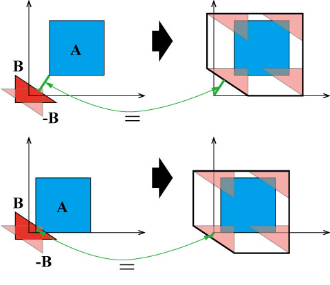
ミンコフスキー差による重なり判定
GJKアルゴリズムはミンコフスキー差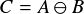が原点を含んでいるかを調べるアルゴリズムである．
ただ，重要なのはGJKではミンコフスキー差Cを明示的には計算しないということである．
GJKではCそのものではなくそのサポート写像を使ってC上の支点を求めていく．
Cの形が分からないのにどうやってそのサポート写像を求めるかというと，
AとBのサポート写像,から，

と求まる．
これは上の図でAと-Bのサポート写像を考えてみたら分かると思う
( は
は 方向なので，と逆方向になっているのでマイナスしていることに注意)．
方向なので，と逆方向になっているのでマイナスしていることに注意)．
長くなってますがさらにもう一つだけ，GJKを理解する上で必要になる理論がある． これは，「d次元の凸多面体の各点はd+1以下の点の凸結合で表現される」という理論である(Caratheodoryの理論)． 2次元(d=2)で考えてみると，凸多角形はある頂点を中心として扇状ならべた三角形(2単体)の集合で表されるということである(下図参照)． もし，これらのd単体のいずれかに原点が含まれていればその凸多面体も原点を含むので， 凸多面体自体を直接調べるのではなく，d単体を順番に調べていけばよいことになる．
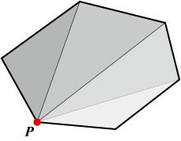
凸多角形を構成する三角形(2単体)
さて，ようやくここまででGJKに必要な知識が集まったので，GJKの具体的なアルゴリズムを見てみよう． 説明しやすくするためにここでは2次元の多角形の場合を考える． また，図形AはBの中心を原点とする座標系に移動しているとする．
-
多角形から任意の頂点Pを選択し，Pから原点Oへのベクトルを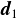とする．
 により支点Qを求める．
により支点Qを求める．

-
線分PQから原点Oへの最短点を求め，その点からOへのベクトルを
 とし，
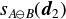により支点Rを求める．
とし，
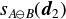により支点Rを求める．
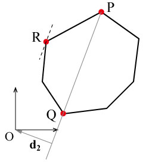
-
三角形PQR(単体)が原点を含んでいたら，AはBと交差しているとして終了．
含んでいない場合は，最短点を求め，その点からOへのベクトルを
 とし，
とし，
 により新しい支点Sを求める．
により新しい支点Sを求める．

-
三角形RQSが原点を含んでいたら，交差しているとして終了．
今回は交差していない，かつ，三角形RQSと原点の最短点と原点を結ぶベクトル
 から新しい支点が得られなくなったので，
AとBは交差していないとして終了．このときがAとBを結ぶ最短距離ベクトルとなる．
から新しい支点が得られなくなったので，
AとBは交差していないとして終了．このときがAとBを結ぶ最短距離ベクトルとなる．

4でまだ新しい支点が得られたら3と同様の処理を繰り返していく． ここでは単純に単体と原点の最短点を求める方法は省略した． 興味のある人は参考文献にあげた「ゲームプログラミングのためのリアルタイム衝突判定」を参照してほしい．